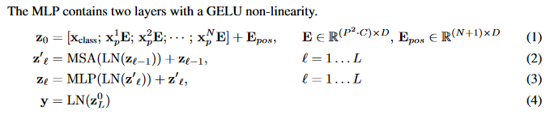
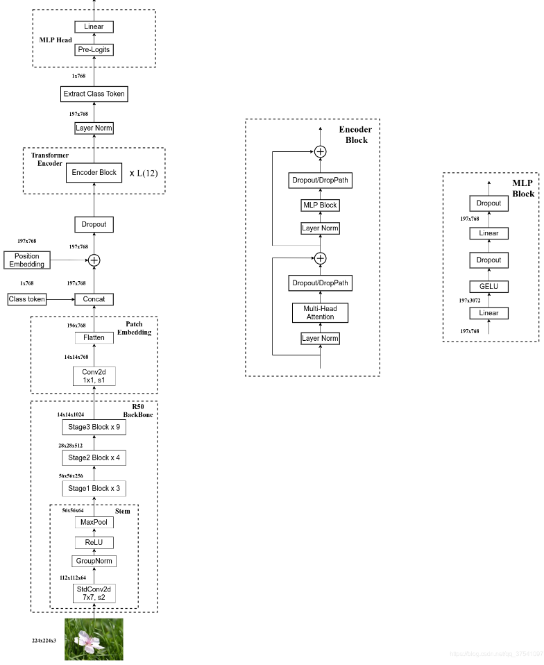

VIT
原论文地址：https://arxiv.org/abs/2010.11929
代码地址：GitHub - google-research/vision_transformer
参考博客：
【深度学习】详解 Vision Transformer (ViT)-CSDN博客
深度学习之图像分类（十八）-- Vision Transformer(ViT)网络详解_vit网络-CSDN博客
参考视频：ViT论文逐段精读【论文精读】_哔哩哔哩_bilibili
绿色及引用：非原文内容，理解部分
红色：个人认为原文中需要特别注意的地方
摘要
虽然 Transformer 架构已成为 NLP 任务的事实标准，但它在 CV 中的应用仍然有限。在视觉上，注意力要么与卷积网络结合使用，要么用于替换卷积网络的某些组件，同时保持其整体结构。我们证明了这种对 CNNs 的依赖是不必要的，直接应用于图像块序列 (sequences of image patches) 的纯 Transformer 可以很好地执行 图像分类 任务。当对大量数据进行预训练并迁移到多个中小型图像识别基准时 (ImageNet、CIFAR-100、VTAB 等)，与 SOTA 的 CNN 相比，Vision Transformer (ViT) 可获得更优异的结果，同时仅需更少的训练资源。
1 介绍
基于自注意力的架构，尤其是 Transformer，已成为 NLP 中的首选模型。主要方法是在大型文本语料库上进行预训练，然后在较小而特定于任务的数据集上进行微调。 由于 Transformers 的计算效率和可扩展性，训练具有超过 100B 个参数的、前所未有的模型成为了可能。随着模型和数据集的增长，仍未表现出饱和的迹象。
然而，在 CV 中，卷积架构仍然占主导地位。受到 NLP 成功的启发，多项工作尝试将类似 CNN 的架构与自注意力相结合，有些工作完全取代了卷积。后一种模型虽然理论上有效，但由于使用了特定的注意力模式，尚未在现代硬件加速器上有效地扩展。因此，在大规模图像识别中，经典的类 ResNet 架构仍是最先进的。
受 NLP 中 Transformer 成功放缩/扩展 (scaling / scale up) 的启发，我们尝试将标准 Transformer 直接应用于图像，并尽可能减少修改。为此，我们将图像拆分为块 (patch)，并将这些图像块的线性嵌入序列作为 Transformer 的输入。图像块 (patches) 的处理方式同 NLP 的标记 (tokens) (故经过线性嵌入后又叫 patch token)。我们以有监督方式训练图像分类模型。
以224x224大小的图片为例，将其分割为14x14=196个16*16大小的patch，若不能整除则用填充或者resize的方法，这样得到的图片序列长度为196，在transformer可以接受的序列长度范围内。
当在没有强正则化的中型数据集（如 ImageNet）上进行训练时，这些模型产生的准确率比同等大小的 ResNet 低几个百分点。 这种看似令人沮丧的结果可能是意料之中的：Transformers 缺乏 CNN 固有的一些归纳偏置(inductive biases) —— 如平移等效性和局部性 (translation equivariance and locality)，因此在数据量不足时，训练不能很好地泛化。
- 归纳偏置：inductive biases，一种先验知识或者说提前做好的假设
- 平移等效性和局部性：translation equivariance and locality，平移等效性是指f(g(x))=g(f(x)) ,即不论是先平移还是先卷积，最后的结果是一样的,局部性是指假设图片上相邻的区域会有相邻的特征
- CNN有了先验知识之后，就可以用相对比较少的数据去学到一个比较好的模型，但是对于transformer来说，它的先验知识需要从数据中自己学习
但若在更大的数据集 (14M-300M 图像) 上训练，情况就会发生变化。我们发现大规模训练胜过归纳偏置。Vision Transformer (ViT) 在以足够的规模进行预训练并迁移到具有较少数据点的任务时获得了出色结果。当在公共 ImageNet-21k 数据集或内部 JFT-300M 数据集上进行预训练时，ViT 在多个图像识别基准上接近或击败了最先进的技术。特别是，最佳模型在 ImageNet 上的准确率达到 88.55%，在 ImageNet-RealL 上达到 90.72%，在 CIFAR-100 上达到 94.55%，在 19 个任务的 VTAB 上达到 77.63%。
2 相关工作
Transformers 是由 Vaswani 等人提出的 机器翻译方法，并已成为许多 NLP 任务中的 SOTA 方法。基于大型 Transformers 的模型通常在大型语料库 (corpus) 上预训练，然后根据所需的下游任务 (down-stream tasks) 进行微调 (finetune)。注意，BERT 使用去噪自监督预训练任务，而 GPT 系列使用语言建模 (LM) 作为预训练任务。
去噪自监督:就是完形填空，具体见BERT精读的文章
语言建模 (LM) :已经有一个句子，去预测下一个word是什么
应用于图像的简单自注意力要求每个像素关注所有其他像素。由于像素数量的二次方成本，其无法放缩到符合实际的输入尺寸（前面提高过的平方复杂度，每个像素做自注意力会导致序列长度非常长，不在transformer能够处理的序列长度范围内）。因此，曾经有研究者尝试过几种近似方法 以便于在图像处理中应用 Transformer。Parmar 等人只在每个 query 像素的局部邻域而非全局应用自注意力，这种局部多头点积自注意力块完全可以代替卷积。在另一种工作中，稀疏 Transformer 采用可放缩的全局自注意力（对稀疏点做自注意力，是全局自注意力的一个近似），以便适用于图像。衡量注意力的另一种方法是将其应用于大小不同的块中，在极端情况下仅沿单个轴（先在H上做自注意力，再在W上做自注意力）。许多这种特殊的注意力架构在 CV 任务上显示出很好的效果，但是需要在硬件加速器上有效地实现复杂的工程。
与我们最相关的是 Cordonnier 等人的模型，该模型从输入图像中提取 2×2 大小的块（这篇论文的作者只在cifar10上面做了实验，图片大小为32*32），并在顶部应用完全的自注意力。该模型与ViT 非常相似，但我们的工作进一步证明了大规模的预训练使普通的 Transformers 能够与 SOTA 的 CNNs 竞争 (甚至更优)。此外，Cordonnier 等人使用 2×2 像素的小块，使模型只适用于小分辨率图像，而我们也能处理中分辨率图像。
将 CNN 与自注意力的形式相结合有很多有趣点，例如增强用于图像分类的特征图，或使用自注意力进一步处理CNN 的输出，如用于目标检测、视频处理、图像分类，无监督目标发现，或统一文本视觉任务。
另一个最近的相关模型是图像 GPT (iGPT)，它在降低图像分辨率和颜色空间后对图像像素应用 Transformers。该模型以无监督的方式作为生成模型进行训练，然后可以对结果表示进行微调或线性探测（仅当作一个特征提取器）以提高分类性能，在 ImageNet 上达到 72% 的最大精度。
我们的工作增加了在比标准 ImageNet 数据集更大尺度上探索图像识别的论文的数量。使用额外的数据源可以在标准基准上取得 SOTA 的成果。此外，Sun 等人研究了 CNN 性能如何随数据集大小而变化，Kolesnikov、Djolonga 等人从 ImageNet-21k 和JFT-300M 等大规模数据集对 CNN 迁移学习进行了实证研究。我们也关注后两个数据集，但是是训练 Transformers 而非以前工作中使用的基于 ResNet 的模型。
3 方法
在模型设计中，我们尽可能地遵循原始 Transformer。 这种有意简单设置的优势在于，可扩展的NLP Transformer架构及其高效实现几乎可以开箱即用。
3.1 ViT
该模型的概述如图 1 所示。标准 Transformer 使用 一维标记嵌入序列 (Sequence of token embeddings) 作为输入。

图1：模型概述。我们将图像分割成固定大小的块，linear embedding每个块，添加位置嵌入，并将生成的向量序列馈送到标准 Transformer 编码器。为了执行分类，我们使用标准方法向序列添加额外的可学习“cls token”。Transformer 编码器的插图受到 Vaswani 等人（2017）的启发。
- linear embedding将每个图像块其变为特征表示
- 添加位置嵌入是因为图片的patch是有顺序的，如果顺序改变了就不是原来的图片了
- 添加额外的可学习“cls token”：学习了bert的做法，也就是图片中的星号，因为这一部分也跟其他所有的patch做了注意力机制，能够从其他的所有patch中学到有用的信息，从而只需要根据的输出作做一个最后的判断即可
（图1右图的具体结构）
为处理 2D 图像，将图像 reshape 为一个展平 (flatten) 的 2D patches 序列,其中（H,W)为原始图像分辨率，C为原始图像通道数,(P,P)为每个图象patch的分辨率，由此产生图像的patch数为 亦为 Vision Transformer 的有效输入序列长度。Transformer 在其所有层中使用恒定的隐向量 (latent vector) 大小D，将图像 patches 展平，并使用 可训练的线性投影 (就是全连接层) 将维度$p^{2}⋅C $映射为 D维，同时保持图像 patches 数 N 不变 (等式 1)。上述投影输出即 图像块嵌入 (Patch Embeddings)

公式中的E就是线性投影层，是指位置编码后的位置向量组成的矩阵，MSA是多头自注意力层，LN是layer norm层 ，是指多头自注意力出来的结果,是指经过l层encoder之后的输入，将要输入到第l+1层encoder中的layer norm层。把token[class]经过L层encoder之后的输出 当做整个transformer模型的输出
PatchEmbed：
2
3
4
5
6
7
8
9
10
11
12
13
14
15
16
17
18
19
20
21
22
23
24
25
26
27
28
"""
2D Image to Patch Embedding
"""
def __init__(self, img_size=224, patch_size=16, in_c=3, embed_dim=768, norm_layer=None):
super().__init__()
img_size = (img_size, img_size)
patch_size = (patch_size, patch_size)
self.img_size = img_size
self.patch_size = patch_size
self.grid_size = (img_size[0] // patch_size[0], img_size[1] // patch_size[1])
self.num_patches = self.grid_size[0] * self.grid_size[1]
self.proj = nn.Conv2d(in_c, embed_dim, kernel_size=patch_size, stride=patch_size)
self.norm = norm_layer(embed_dim) if norm_layer else nn.Identity() # 若没有初始化norm_layer则不做任何操作
def forward(self, x):
B, C, H, W = x.shape
assert H == self.img_size[0] and W == self.img_size[1], \
f"Input image size ({H}*{W}) doesn't match model ({self.img_size[0]}*{self.img_size[1]})."
#传入图片高与宽与设定的不一致则会报错
# flatten: [B, C, H, W] -> [B, C, HW]
# transpose: [B, C, HW] -> [B, HW, C]
x = self.proj(x).flatten(2).transpose(1, 2) # 展平后两个维度并且调换维度
x = self.norm(x)
return x
与 BERT 的 [class] token类似，我们在token embeddding序列前面添加一个可学习的嵌入，其 Transformer 编码器输出处的状态用作图像表示y（等式 4）。在预训练和微调期间，分类头都附加到之后。分类头在预训练时由具有一个隐藏层的 MLP 实现，在微调时由单个线性层实现。
手动添加一个 可学习的嵌入向量作为用于分类的类别向量 xclass，同时与其他图像块嵌入向量一起输入到 Transformer 编码器中，最后取追加的首个可学习的嵌入向量作为类别预测结果。class token可以用全局平均池化替换，见附录D.3)
2
3
4
5
6
7
8
9
10
11
12
13
14
15
16
17
18
19
20
self.cls_token = nn.Parameter(torch.zeros(1, 1, embed_dim)) # shape = (1, 1, D)
### 分类头 (Classifier head)
self.head = nn.Linear(self.num_features, num_classes) if num_classes > 0 else nn.Identity()
### 前馈过程 (Forward)
B = x.shape[0] # Batch Size
# 通过 可学习的线性投影 获取 Input Imgaes 的 Patch Embeddings (实现在 3.1 节)
x = self.patch_embed(x) # x.shape = (B, N, D)
# 可学习嵌入 - 用于分类
cls_tokens = self.cls_token.expand(B, -1, -1) # shape = (B, 1, D)
# 按元素相加 附带 Position Embeddings
x = x + self.pos_embed # shape = (B, N, D) - Python 广播机制
# 按通道拼接 获取 N+1 维 Embeddings
x = torch.cat((cls_tokens, x), dim=1) # shape = (B, N+1, D)
postion embedddings被添加到补丁嵌入中以保留位置信息。我们使用标准的可学习1D postion embedddings，因为我们没有观察到使用更先进的 2D感知postion embedddings带来的显着性能提升（附录 D.4）。生成的嵌入向量序列用作编码器的输入。
1D postion embedddings：
2
3
4
5
6
# embed_dim 即 patch embed_dim
self.pos_embed = nn.Parameter(torch.zeros(1, num_patches + 1, embed_dim))
# patch emded + pos_embed ：图像块嵌入 + 位置嵌入
x = x + self.pos_embed
Transformer 编码器由多头自注意力和 MLP块（等式 2、3）的交替层组成。 Layernorm (LN) 应用在每个块之前，并在每个块之后应用残差连接。MLP 包含两个具有 GELU 非线性的层。
图片的预处理过程：以一个224x224x3的图片为例，假设每个patch的大小为16x16，那么最后的序列长度N=196，每个patch的纬度是16x16x3=768，线性投射层其实就是一个全连接层，全连接层的维度为768x768，这里后一个768就是文章中所说的D，D是可以选择的，不是就是p方xC，前一个768是由前面算来的，要对应。经过线性投射层之后输出的是196个token，每个token的维度是768。算上cls token，整体序列的长度为197。位置编码不是1234这种序号，它有一个位置编码表，每一个不同的向量对应一个序号，这个向量的维度与D是相同的，这个位置向量也是可以学习的。之后把197个位置向量加到197个token当中，这里的加就是向量相加，不是向量拼接，得到197x768的序列。即图片右侧的Embedded Patches。
经过layer norm之后还是197x768，假设用的是ViT的base版本有12个head，则输入多头自注意力的维度为768/12=64，也就是说k，q，v均为197x64，十二个头分别做自注意力然后concat，输出还是197x768，之后过layer norm和MLP，MLP会把维度放大，一般放大四倍，故输出197x3072，再缩小投射回去为197x768。
输入输出的维度相同，意味着可以不停的叠transformer的层数，这里叠了L层
归纳偏置。我们注意到 Vision Transformer 的图像特定的归纳偏置比 CNN 少得多。在 CNN 中，局部性、二维邻域结构和平移等效性被融入到整个模型的每一层中。在 ViT 中，只有 MLP 层是局部和平移等变的，而自注意力层是全局的。二维邻域结构的使用非常少：在模型开始时将图像切割成块，并在微调时调整不同分辨率图像的位置嵌入（如下所述）。除此之外，初始化时的位置嵌入不携带有关patches的 2D 位置的信息，并且patches之间的所有空间关系都必须从头开始学习。
混合模型。作为原始图像块的替代方案，输入的序列可以由 CNN 的特征图形成（LeCun 等人，1989）。在此混合模型中，patch embedding投影 E（方程 1）应用于从 CNN 特征图提取的patch。（就是说把特征图作为输入打成patch）作为一种特殊情况，patches可以具有 1x1 的空间大小，这意味着输入序列是通过简单地展平特征图的空间维度并投影到 Transformer 维度来获得的。如上所述添加分类输入嵌入和位置嵌入。
简单来说，就是先用 CNN 提取图像特征，然后由 CNN 提取的特征图构成图像块嵌入。由于 CNN 已经将图像降采样了，所以块尺寸可为 1×1

首先用传统的神经网络 backbone 来提取特征，然后再通过 ViT 模型进一步得到最终的结果。这里的特征提取部分采用的是 ResNet50 网络，但是和原来的有所不同，第一点是采用 stdConv2d，第二点则是使用GN而非BN，第三点是将 stage4 中的 3 个 block 移动到 stage3 中。
3.2 微调和更高的分辨率
通常，我们在大型数据集上预训练 ViT，并对（较小的）下游任务进行微调。为此，我们移除预训练的预测头并附加一个零初始化的 D × K 前馈层，其中 K 是下游类的数量。以比预训练更高的分辨率进行微调通常是有益的。当输入更高分辨率的图像时，我们保持patch大小相同，这会导致更大的有效序列长度。 Vision Transformer 可以处理任意序列长度（取决于内存限制），但是，预先训练的位置嵌入可能不再有意义(原先图像可能被分割为9宫格，后面变为16宫格，25宫格，patch的数量变了，位置编码就可能不再有意义）。因此，我们可以根据预训练位置嵌入在原始图像中的位置对它们进行 2D 插值（用torch自带的interpolate函数，但如果分辨率提升较大例如从256x256到512x512，直接进行操作是可能会导致效果变差的）。请注意，此分辨率调整和patch提取是手动将有关图像 2D 结构的归纳偏置注入 Vision Transformer 的唯一点。
2
3
4
5
6
7
8
9
10
11
12
13
14
15
16
17
18
19
20
# Rescale the grid of position embeddings when loading from state_dict. Adapted from
# https://github.com/google-research/vision_transformer/blob/00883dd691c63a6830751563748663526e811cee/vit_jax/checkpoint.py#L224
_logger.info('Resized position embedding: %s to %s', posemb.shape, posemb_new.shape)
ntok_new = posemb_new.shape[1]
# 除去 class token 的 pos_embed
posemb_tok, posemb_grid = posemb[:, :1], posemb[0, 1:]
ntok_new -= 1
gs_old = int(math.sqrt(len(posemb_grid)))
gs_new = int(math.sqrt(ntok_new))
_logger.info('Position embedding grid-size from %s to %s', gs_old, gs_new)
# 把 pos_embed 变换到 2-D 维度再进行插值
posemb_grid = posemb_grid.reshape(1, gs_old, gs_old, -1).permute(0, 3, 1, 2)
posemb_grid = F.interpolate(posemb_grid, size=(gs_new, gs_new), mode='bilinear')
posemb_grid = posemb_grid.permute(0, 2, 3, 1).reshape(1, gs_new * gs_new, -1)
posemb = torch.cat([posemb_tok, posemb_grid], dim=1)
return posemb
4 实验
我们评估了 ResNet、Vision Transformer (ViT) 和混合网络的表示学习能力。为了了解每个模型的数据要求，我们对不同大小的数据集进行预训练并评估许多基准任务。当考虑预训练模型的计算成本时，ViT 的表现非常出色，以较低的预训练成本在大多数识别基准上达到了最先进的水平。最后，我们使用自监督进行了一个小实验，并表明自我监督的 ViT 为未来带来了希望。
4.1 设置
数据集。为了探索模型的可扩展性，我们使用具有1k类和130万图像的ILSVRC-2012 ImageNet 数据集（在下文中将其称为 ImageNet），其超集 ImageNet-21k 具有21k类和14M图像（Deng 等人，2009）和 JFT（Sun et al., 2017），具有 18k 类和 303M 高分辨率图像。我们对预训练数据集进行重复数据删除。 之后的下游任务的测试集采用Kolesnikov等人的工作。 我们将在这些数据集上训练的模型转移到几个基准任务：ImageNet 、CIFAR-10/100 、Oxford-IIIT Pets 和 Oxford Flowers-102上的原始验证标签和清理后的 ReaL 标签。对于这些数据集，预处理遵循Kolesnikov等人的方法。
我们还评估了19类任务VTAB 分类套件（Zhai 等人，2019b）。VTAB 评估不同任务的低数据传输，每个任务使用 1000 个训练示例。这些任务分为三组：自然任务-如上述任务、宠物、CIFAR 等；专业任务-医疗和卫星图像；结构化任务-需要几何理解（如定位）。
模型变体。 ViT 的配置基于BERT 的配置（Devlin 等人，2019），如表 1 所示。“Base”和“Large”模型直接采用自 BERT，我们添加了更大的“Huge”模型。接下来，我们使用简短的符号来表示模型大小和输入patch大小：例如，ViT-L/16 表示输入patch大小为16×16的“大”变体。请注意，Transformer 的序列长度与patch大小的平方成反比，因此patch大小较小的模型在计算上更加昂贵。
patch size越小，切成的块越多，序列长度越大
对于基线 CNN，我们使用 ResNet ，但用组归一化(GN)替换批量归一化层(BN) ，并使用标准化卷积 。这些修改改进了传输效率，我们将修改后的模型表示为“ResNet (BiT)”。对于混合模型，我们将中间特征图输入到 ViT 中，补丁大小为一个“像素”。为了试验不同的序列长度，我们要么 (i) 获取常规 ResNet50第4阶段的输出，要么 (ii) 删除第 4 阶段，在第 3 阶段放置相同数量的层（保持总层数），然后采用该扩展阶段 3 的输出。选项 (ii) 导致序列长度增加 4 倍，并且ViT模型更昂贵。
**训练和微调。**我们使用 Adam，β1 = 0.9，β2 = 0.999，批量大小为4096，并应用0.1的高权重衰减训练所有模型，包括 ResNet，我们发现这对于所有模型的迁移非常有用。模型（附录 D.1 表明，与常见做法相比，在我们的设置中，Adam 的 ResNet 效果略好于 SGD）。我们使用线性学习率预热和衰减，详细信息请参阅附录 B.1。为了进行微调，我们对所有模型使用带有动量的 SGD，批量大小为512，请参见附录 B.1.1。对于表 2 中的 ImageNet 结果，我们以更高分辨率进行微调：ViT-L/16 为 512，ViT-H/14 为 518，并且还使用 Polyak & Juditsky (1992) 平均，因子为 0.9999。
表2：与流行图像分类基准的最新技术进行比较。我们报告了准确度的平均值和标准差，这是三次微调运行的平均值。在 JFT-300M 数据集上预训练的 Vision Transformer 模型在所有数据集上都优于基于ResNet的baseline，同时预训练所需的计算资源要少得多。 ViT 在较小的公共 ImageNet-21k 数据集上进行预训练也表现良好。
指标。我们通过小样本学习或者微调之后的正确率来体现下游数据集的结果。微调之后的正确率捕获每个模型在各自数据集上微调后的性能。通过解决正则化最小二乘回归问题来获得小样本精度，该问题将训练图像子集的（冻结）表示映射到目标向量。这个公式使我们能够以封闭形式恢复精确的解决方案。尽管我们主要关注微调性能，但有时我们会使用线性少样本准确率进行快速动态评估，而微调的成本太高。
4.2 与现有技术的比较
我们首先将我们最大的模型ViT-H/14 和 ViT-L/16 与文献中最先进的 CNN 进行比较。第一个比较点是 Big Transfer (BiT)，它使用大型 ResNet 执行监督迁移学习。第二个是 Noisy Student，它是一个大型 EfficientNet，在 ImageNet 和 JFT300M 上使用半监督学习进行训练，并删除了标签。目前，Noisy Student 是此处报告的其他数据集 ImageNet 和 BiT-L上最先进的技术。所有模型均在 TPUv3 硬件上进行训练，我们报告了预训练每个模型所需的 TPUv3 核心天数，即用于训练的 TPU v3 核心数量（每个芯片 2 个）乘以训练时间几天之内。
图中noisy student是用伪标签去进行self training，这里vit的效果相比别的没有领先很多，只差几个点，作者通过用tpu计算天数的方式来阐明vit的优势，注意这里的天数是一张卡的时间，实际没有这么多天
结果如表2所示。在 JFT-300M 上预训练的较小 ViT-L/16 模型在所有任务上都优于 BiT-L（在同一数据集上预训练），同时训练所需的计算资源要少得多。更大的模型 ViT-H/14 进一步提高了性能，尤其是在更具挑战性的数据集上——ImageNet、CIFAR-100 和 VTAB 套件。有趣的是，这与现有技术相比，模型预训练所需的计算量仍然少得多。然而，我们注意到预训练效率可能不仅受到架构选择的影响，还受到其他参数的影响，例如训练计划、优化器、权重衰减等。我们在第 4.4 节提供了针对不同架构的性能与计算的受控研究。最后，在公共 ImageNet-21k 数据集上预训练的 ViT-L/16 模型在大多数数据集上也表现良好，同时预训练所需的资源更少：它可以在具有8个核心的标准云服务器TPUv3上训练大约30天。
图 2 将 VTAB 任务分解为各自的组，并在此基准上与之前的 SOTA 方法进行比较：BiT、VIVI 是在 ImageNet 和 Youtube 上共同训练的 ResNet，以及 S4L-监督加半监督ImageNet 上的监督学习。 ViT-H/14 在自然和结构化任务上优于 BiT-R152x4 和其他方法。在 Specialized 上，前两个型号的性能相似。
4.3 预训练数据要求
Vision Transformer 在大型 JFT-300M 数据集上进行预训练时表现良好。与 ResNet 相比，视觉归纳偏差更少，数据集大小有多重要？我们进行了两个系列的实验。
首先，我们在越来越大的数据集上预训练 ViT 模型：ImageNet、ImageNet-21k 和 JFT300M。为了提高较小数据集的性能，我们优化了三个基本正则化参数——权重衰减、drop out和标签平滑。图3显示了对 ImageNet 进行微调后的结果（其他数据集上的结果如表 5 所示）2。当在最小数据集 ImageNet 上进行预训练时，尽管进行了（适度）正则化，但与 ViT-Base 模型相比，ViT-Large 模型的表现仍较差。通过 ImageNet-21k 预训练，它们的性能相似。只有通过 JFT-300M，我们才能看到更大模型的全部优势。图3还显示了由不同大小的 BiT 模型性能跨越的区域。 BiT CNNs 在 ImageNet 上的表现优于ViT，但在数据集更大的情况下，ViT反超了。
图3：迁移到 ImageNet。虽然在小数据集上预训练时，大型 ViT 模型的表现比 BiT ResNet（阴影区域）差，但在较大数据集上预训练时，它们表现出色。同样，随着数据集的增长，较大的 ViT 变体会取代较小的 ViT 变体。
这张图是论文中最重要的图，表明了数据集越大，越大的vit变体正确率越高
图4：ImageNet 与预训练大小的线性少样本评估。 ResNet 在较小的预训练数据集上表现更好，但比 ViT 更快达到稳定状态，而 ViT 在较大的预训练数据集上表现更好。 ViT-b 是所有隐藏维度减半的 ViT-B。
线性评估是指拿到预训练模型之后直接把他当成一个特征提取器，不去fine tune，而是直接将特征用来做逻辑回归。这里few-shot从图中可以看到是5-shot，是指在imagenet上做线性评估时，每一类选5个样本
图5：不同架构的性能与预训练计算：Vision Transformers、ResNet 和混合架构。在相同的计算预算下，视觉 Transformer 的性能通常优于 ResNet。对于较小的模型尺寸，混合模型比纯 Transformer 有所改进，但对于较大的模型，这种差距就消失了。
其次，我们在 9M、30M 和 90M 的随机子集以及完整的 JFT300M 数据集上训练模型。我们不对较小的子集执行额外的正则化，并对所有情况设置使用相同的超参数。通过这种方式，我们可以评估模型的内在属性，而不是正则化的效果。我们使用early-stopping，并报告训练期间实现的最佳验证准确性。为了节省计算量，我们报告了几次线性小样本正确率而不是完全微调正确率。图4包含结果。在较小的数据集上，视觉 Transformer 的过拟合程度比 ResNet 的过拟合程度要高，但计算成本相当。例如，ViT-B/32 比 ResNet50 稍快；它在 9M 子集上表现较差，但在 90M+ 子集上表现更好。 ResNet152x2 和 ViT-L/16 也是如此。这一结果加深了这样的感觉觉：卷积归纳偏差对于较小的数据集很有用，但对于较大的数据集，直接从数据中学习相关模式就足够了，甚至是更好。
总体而言，ImageNet 上的少样本结果（图 4）以及 VTAB 上的低数据结果（表 2）对于极低数据迁移似乎很有希望。进一步分析 ViT 的小样本特性是未来工作的一个令人兴奋的方向。
4.4 规模化研究
我们在JFT-300M数据集上通过评估传输性能来对不同模型进行受控缩放研究。在这种情况下，数据大小不会成为模型性能的瓶颈，我们评估每个模型的性能与预训练成本。模型集包括：7个ResNet，R50x1、R50x2、R101x1、R152x1、R152x2，预训练7个epoch，加上R152x2和R200x3预训练14个epoch； 6 个 Vision Transformer，ViT-B/32、B/16、L/32、L/16，预训练 7 个 epoch，加上 L/16 和 H/14 预训练 14 个 epoch；和 5 个混合体，R50+ViT-B/32、B/16、L/32、L/16 预训练 7 个 epoch，加上 R50+ViT-L/16 预训练 14 个 epoch（对于混合体，数量为模型名称的末尾不代表补丁大小，而是代表 ResNet 主干中的总下采样率）。
图5包含传输性能与总预训练计算的比较（有关计算成本的详细信息，请参阅附录 D.5）。附录中的表6提供了每个模型的详细结果。可以观察到一些模式。首先，Vision Transformers 在性能/计算权衡方面主导 ResNet。 ViT 使用大约2 − 4倍的计算量来获得相同的性能（超过 5 个数据集的平均值）。其次，混合模型在计算预算较小的情况下略优于 ViT，但对于较大的模型，这种差异消失了。这个结果有点令人惊讶，因为人们可能认为卷积的局部特征处理能够帮助任何大小的 ViT。第三，Vision Transformers 似乎并未在尝试的范围内饱和，这激励了未来的扩展工作。
4.5 检查ViT
为了开始了解 Vision Transformer 如何处理图像数据，我们分析其内部表示。 Vision Transformer 的第一层将展平的patches线性投影到低维空间（方程 1）。图 7（左）显示了学习到的embedding filter的顶部主要组件。这些组件类似于每个patch内精细结构的低维表示的合理基函数
就是说学习到的纹理结构和一些颜色信息可以用作描述每一个图像块的底层结构的。

图 7：左：ViT-L/32 RGB 值的初始linear embedding的滤波器。中：ViT-L/32 位置嵌入的相似性。图块显示了具有指定行和列的补丁的位置嵌入与所有其他补丁的位置嵌入之间的余弦相似度。右图：按头部和网络深度划分的关注区域大小。每个点显示一层 16 个头部之一的图像之间的平均注意力距离。详细信息请参见附录 D.7。
投影之后，学习的位置嵌入被添加到patch表示中。图 7（中）显示，模型学习到了通过位置嵌入的相似性来对图像内的距离进行编码，即较近的块往往具有更相似的位置嵌入（1表示相似度最高，-1表示相似度最低，这里的位置编码采用的余弦编码模式，从图中看（4，4）的图像块正中间是最明显的黄色，表示与patch 4与自身相似度最高。同时离自身越近越黄，离自身越远越蓝，表示学习到了这种距离的概念）。进一步，出现行列结构；同一行/列中的补丁具有相似的嵌入（同行同列更黄，相似度更高）。最后，对于较大的网格，有时会出现明显的正弦结构（附录 D）。位置嵌入学习表示 2D 图像拓扑解释了为什么手工制作的 2D 感知嵌入变体无法产生更好的效果（1D已经学习到了2D的距离特征，于是乎1D已经够用了，2D就没有什么明显的效果）（附录 D.4）。
自注意力使得 ViT 能够整合整个图像的信息，甚至在最低层也是如此。我们研究网络在多大程度上利用了这种能力。具体来说，我们根据注意力权重计算图像空间中信息整合的平均距离（图 7，右）（vit-L有24层，每层16个头，横坐标对应0-23，每一列16个点，两个像素点之间的平均注意力距离=真实像素之间差的距离x它们之间的注意力权重）。这种“注意力距离”类似于 CNN 中的感受野大小。我们发现一些头部在最低层时已经关注到了大部分的图像（以第一列为例，在最开始的第一层就已经有一个点的平均注意力距离达到了一百多，表明它关注到了很多图像中的全局信息），这表明该模型确实使用了全局集成信息的能力。其他注意力头在低层的注意力距离始终较小。这种高度局部化的注意力在 Transformer 之前应用 ResNet 的混合模型中不太明显（图 7，右），这表明它可能具有与 CNN 中的早期卷积层类似的功能。此外，注意力距离随着网络深度的增加而增加。在全局范围内，我们发现该模型已经能关注到与分类语义相关的图像区域（图 6）（如果用网络最后一层的output token去折射回原来的输入图片，从图6中可以看到它学到了分类这个概念，即注意到了狗和飞机等等）。
4.6 自监督
Transformer 在 NLP 任务上表现出了令人印象深刻的性能。然而，他们的成功很大程度上不仅源于其出色的可扩展性，还源于大规模的自我监督预训练。我们还模仿 BERT 中使用的屏蔽语言建模任务，对用于自我监督的masked patch prediction进行了初步探索。通过自监督预训练，我们较小的 ViT-B/16 模型在 ImageNet 上实现了 79.9% 的准确率，比从头开始训练显着提高了 2%，但仍落后于监督预训练 4%。附录 B.1.2 包含更多详细信息。我们将对比预训练的探索（Chen et al., 2020b; He et al., 2020; Bachman et al., 2019; H́ enaff et al., 2020）留给未来的工作。
屏蔽语言建模:完形填空，给你一个句子，把一些词mask掉，通过一个模型最后再去把它预测出来
自我监督的masked patch prediction:对于一张已经划成patches的图片，把某些patch抹掉，通过模型把patch给重建出来
5 结论
我们探索了 Transformer 在图像识别中的直接应用。与计算机视觉中使用自注意力的先前工作不同，除了初始patch的提取步骤之外，我们不会将图像特定的归纳偏置引入到架构中。相反，我们将图像解释为patch序列，并通过 NLP 中使用的标准 Transformer 编码器对其进行处理。当与大型数据集的预训练相结合时，这种简单但可扩展的策略效果出奇地好。因此，Vision Transformer 在许多图像分类数据集上达到或超过了最先进的水平，同时预训练的成本相对较低。虽然这些初步结果令人鼓舞，但仍然存在许多挑战。一是将ViT应用于其他计算机视觉任务，例如检测和分割。我们的结果与 Carion 等人的结果（2020）相结合，指出了这种方法的前景。另一个挑战是继续探索自监督的预训练方法。我们的初步实验显示自监督预训练有所改善，但自监督预训练与大规模监督预训练之间仍然存在很大差距。最后，ViT 的进一步扩展可能会带来性能的提高。
附录
A 多头自注意力
见Transformer原文笔记
B 实验设置
B.1 训练
表 3 总结了我们针对不同模型的训练设置。我们发现在 ImageNet数据集 上从头开始训练模型时，强正则化是关键。使用时，Dropout 应用于除 qkv 投影之外的每个dense layer之后，以及直接在添加positional embeddding到patch embeddding之后应用。混合模型使用与 ViT 模型完全相同的设置进行训练。最后，所有训练都是在分辨率224下进行的。
表3：用于训练的超参数。所有模型均以 4096 的批量大小和10k步的学习率预热进行训练。对于 ImageNet，我们发现在全局范数1下额外应用梯度裁剪是有益的。训练图像分辨率为 224。
B.1.1 微调
我们使用动量为0.9的 SGD 微调所有 ViT 模型。我们对学习率进行小网格搜索，请参阅表 4 中的学习率范围。为此，我们使用训练集中的子集分割（10% 用于宠物和花卉，2% 用于 CIFAR，1% ImageNet）作为开发集并根据剩余数据进行训练。为了获得最终结果，我们对整个训练集进行训练并根据相应的测试数据进行评估。对于微调 ResNet 和混合模型，我们使用完全相同的设置，唯一的例外是 ImageNet，我们在学习率扫描中添加了另一个值 0.06。此外，对于 ResNets，我们还运行 Kolesnikov 等人的设置。 并选择本次运行和我们的扫描中的最佳结果。最后，如果没有另外提及，所有微调实验都以 384 分辨率运行（以与训练不同的分辨率运行微调是常见做法）。
表4：用于微调的超参数。所有模型均通过余弦学习率衰减、批量大小为 512、无权重衰减以及全局范数 1 的梯度裁剪进行微调。如果没有另外说明，微调分辨率为 384
将 ViT 模型转移到另一个数据集时，我们删除整个头部（两个线性层），并将其替换为单个零初始化的线性层，输出目标数据集所需的类数。我们发现这比简单地重新初始化最后一层更稳健一些。
对于 VTAB，我们遵循 Kolesnikov 等人中的协议，并对所有任务使用相同的超参数设置。我们使用 0.01 的学习率并训练 2500 步（表 4）。我们通过对两个学习率和两个计划进行小范围扫描来选择此设置，并在 200 个示例验证集上选择具有最高 VTAB 分数的设置。我们遵循 Kolesnikov 等人使用的预处理，除了我们不使用特定于任务的输入分辨率。相反，我们发现 Vision Transformer 在所有任务中从高分辨率 (384 × 384) 中获益最多。
B.1.2 自监督
我们采用masked patch prediction目标进行初步自我监督实验。为此，我们通过将其嵌入替换为可学习的[mask]嵌入（80％）、随机的其他patch embedding（10％）或仅保持原样（10％）来破坏50％的patch embedding。此设置与 Devlin 等人用于语言的设置非常相似（见bert论文）。 。最后，我们使用各自的补丁表示来预测每个损坏补丁的 3 位平均颜色（即总共 512 种颜色）。
我们在 JFT 上以 1M 步骤（约 14 个周期）训练自监督模型，批量大小为 4096。我们使用 Adam，基础学习率为，预热步骤为 10k，余弦学习率衰减。作为预训练的预测目标，我们尝试了以下设置：
- 仅预测平均值、3 位颜色（即 1 次预测 512 种颜色）
- 并行预测具有 3 位颜色的 16 × 16 色块的 4 × 4 缩小版本（即 512 种颜色的 16 个预测）
- 使用 L2 对完整块进行回归（即对 3 个 RGB 通道进行 256 个回归）。令人惊讶的是，我们发现一切都运行得很好，尽管 L2 稍差一些。我们仅报告选项 1) 的最终结果，因为它显示了最佳的少样本学习性能。我们还尝试了 Devlin 等人使用的 15% corruption rate但我们的几次测试指标结果也稍差。
最后，我们要指出的是，我们的masked patch prediction实例化不需要如此大量的预训练，也不需要像 JFT 这样的大型数据集，就能在 ImageNet 分类上获得类似的性能提升。也就是说，我们观察到经过 10 万个预训练步骤后下游性能的回报递减，并且在 ImageNet 上进行预训练时看到了类似的收益。
C 附加结果
我们报告了与论文中提供的数据相对应的详细结果。表 5 对应于论文中的图 3，显示了在尺寸不断增加的数据集预训练的不同 ViT 模型的迁移性能：ImageNet、ImageNet-21k 和 JFT-300M。表6对应于论文中的图 5，显示了 ViT、ResNet 和不同大小的混合模型的传输性能，以及它们预训练的估计计算成本。
表 5：在 ImageNet、ImageNet-21k 或 JFT300M 上进行预训练时，Vision Transformer 在各种数据集上的 Top1 准确度（以%为单位）。这些值对应于正文中的图 3。模型在384分辨率下进行了微调。请注意，计算 ImageNet 结果时没有使用额外的技术（Polyak平均和512分辨率图像）来实现表2中的结果。
表 6：模型缩放实验的详细结果。这些对应于主论文中的图 5。我们展示了几个数据集的迁移准确性以及预训练计算成本（以 exaFLOP 为单位）。
D 附加分析
D.1 SGD VS. ADAM 对ResNet的影响
ResNet 通常使用 SGD 进行训练，而我们使用 Adam 作为优化器是非常非常规的。在这里，我们展示了促成这一选择的实验。也就是说，我们比较使用 SGD 和 Adam 在 JFT 上进行预训练的两个 ResNet（50x1 和 152x2）的微调性能。对于 SGD，我们使用 Kolesnikov 等人推荐的超参数。结果如表 7 所示。在大多数数据集上，Adam 预训练的平均性能优于 SGD 预训练。这证明选择 Adam 作为用于在 JFT 上预训练 ResNet 的优化器是合理的。请注意，绝对数字低于 Kolesnikov 等人报告的数字是因为我们只预训练 7 个 epoch，而不是30个。
D.2 Transformer 架构
我们对 Transformer 架构的不同维度进行了缩放，以找出最适合缩放到非常大的模型的维度。图 8 显示了不同配置下 ImageNet 上的 5-shot的性能。所有配置均基于8层的ViT模型，D = 1024， = 2048，patch大小为 32，即所有线的交集。我们可以看到，缩放深度会带来最大的改进，这种改进在 64 层之前都清晰可见。然而，在 16 层之后，收益递减就已经很明显了。有趣的是，缩放网络宽度似乎会导致最小的变化。减小补丁大小并从而增加有效序列长度在不引入参数的情况下显示出令人惊讶的强大改进。这些发现表明，计算量可能比参数数量能更好地衡量性能，并且缩放应该强调深度而不是宽度（如果有的话）。总的来说，我们发现按比例缩放所有维度会带来稳健的改进。
D.3 头的类型与class token
为了尽可能接近原始 Transformer 模型，我们使用了一个额外的 [class] token，它被用作图像表示。然后，该token的输出通过小型多层感知器 (MLP) 转换为class prediction，其中 tanh 在单个隐藏层中为非线性激活函数。
这种设计继承自NLP的 Transformer 模型，我们在整个主论文中都使用它。最初尝试仅使用图像块嵌入、全局平均池化 (GAP)，然后使用线性分类器（就像 ResNet 的最终特征图一样）（在resnet中是将残差块输出的特征图做全局池化后展平为一个特征向量，然后在用作去分类），但效果非常差。然而，我们发现这既不是由于额外的token，也不是由于 GAP 操作。反而，性能差异可以通过不同学习率的要求来充分解释，见图 9。
就是说其实用全局池化或者加class token的方式都可以，这里之所以采用class token的原因是要跟NLP的原论文设置一致，想要告诉读者标准的transformer也能做视觉任务，影响效果的主要原因是学习率
D.4 位置编码
我们使用位置嵌入对空间信息编码的不同方式进行了消融。我们尝试了以下案例：
-
不提供位置信息：将输入视为一袋patches。
-
一维位置嵌入：将输入视为光栅顺序的patch序列（本文中所有其他实验的默认值）。
光栅顺序是指从左到右从上到下的顺序排成123456789
-
二维位置嵌入：将输入视为二维的patches网格。在这种情况下，学习两组嵌入，每组嵌入一个轴、X 嵌入和 Y 嵌入，每个嵌入的大小为 D/2。然后，根据输入中路径上的坐标，我们连接 X 和 Y 嵌入以获得该补丁的最终位置嵌入
例如一张分为9个patch的图片，位置序号用(1,1),(1,2)…来表示，对于横，纵坐标的序号用D/2维度的向量分别表示，最后将向量concat到一起变为D维度的位置向量，把这种向量称之为2d的位置编码）。
-
相对位置嵌入：考虑块之间的相对距离来编码空间信息，而不是它们的绝对位置。为此，我们使用一维相对注意力，其中我们定义所有可能的patch-pair的相对距离。因此，对于每个给定的pair（一个作为查询，另一个作为注意机制中的键/值），我们有一个偏移量 pq - pk，其中每个偏移量都与一个嵌入相关联。然后，我们简单地运行额外的注意力，我们使用原始查询（查询的内容），但使用相对位置嵌入作为键。然后，我们使用相对注意力的 logits 作为偏差项，并将其添加到主注意力（基于内容的注意力）的 logits，然后再应用 softmax。
除了编码空间信息的不同方法之外，我们还尝试了将这些信息合并到我们的模型中的不同方法。对于一维和二维位置嵌入，我们尝试了三种不同的情况：（1）将位置嵌入添加到紧随它们模型的主干其后的输入中以及输入到 Transformer 编码器之前（本文所有其他实验的默认设置）； (2) 学习并将位置嵌入其添加到每层开头的输入中； (3) 将学习到的位置嵌入添加到每层开头的输入（层之间共享）。
表 8 总结了 ViT-B/16 模型消融研究的结果。正如我们所看到的，虽然没有位置嵌入的模型和有位置嵌入的模型的性能之间存在很大差距，但不同的位置信息编码方式之间几乎没有差异。我们推测，由于我们的 Transformer 编码器在块级输入上运行，而不是像素级输入，因此如何编码空间信息的差异并不那么重要。更准确地说，在块级输入中，空间维度比原始像素级输入小得多，例如 14 × 14 而不是 224 × 224，并且学习以这种分辨率表示空间关系对于这些人来说同样容易不同的位置编码策略。即便如此，网络学习到的位置嵌入相似性的具体模式取决于训练超参数（图 10）。
图11：按head和网络深度划分的注意区域大小（这里的注意区域相当于CNN中的感受野）。通过平均查询像素与所有其他像素之间的距离（按注意力权重加权），计算 128 个示例图像的注意力距离。每个点显示一层 16 个头部之一的图像之间的平均注意力距离。图像宽度为 224 像素。
D.5 经验计算成本
我们还对硬件架构的实际速度感兴趣，由于通道宽度和缓存大小等细节，理论上的 FLOP 并不总是能很好地预测这一速度。以此目的，我们在 TPUv3 加速器上对主要感兴趣模型的推理速度进行计时；推理速度和反向传播速度之间的差异是一个与模型无关的常数因素。
图 12（左）显示了一个内核每秒可以处理各种输入大小的图像数量。每个点都是指在各种批量大小下测量的峰值性能。可以看出，对于最大分辨率下的最大模型，ViT 与图像尺寸的理论双二次缩放才刚刚开始发生。
另一个令人感兴趣的数量是每个模型可以适应核心的最大批量大小，越大越好扩展到大型数据集。图 12（右）显示了同一组模型的这个数量。这表明大型 ViT 模型在内存效率方面比 ResNet 模型具有明显的优势。
图 12：左：跨输入大小的各种架构的真实挂钟时序。 ViT 模型的速度与类似的 ResNet 相当。右：最大的每核批量大小适合具有跨输入大小的各种架构的设备。 ViT 模型显然更节省内存。
D.6 轴向注意力
轴向注意力是一种简单而有效的技术，可对结构为多维张量的大型输入运行自注意力。轴向注意力的总体思想是执行多个注意力操作，每个注意力操作都沿着输入张量的单个轴，而不是对输入的扁平版本应用一维注意力。在轴向注意力中，每个注意力混合沿特定轴的信息，同时保持沿其他轴的信息独立。沿着这条线，王等人提出了AxialResNet 模型，其中 ResNet50中所有内核大小为3×3 的卷积都被轴向自注意力即行和列注意力）取代，并通过相对位置编码进行增强。我们已经实现了 AxialResNet 作为基线模型。
此外，我们修改了ViT 来处理2维形状的输入，而不是一维的patch序列，并合并了 Axial Transformer 块，而不是一个紧随 MLP 的自注意力。其中我们有一个行自注意力加一个 MLP，然后是一个列自注意力加一个 MLP。
图 13 显示了在 JFT 数据集上进行预训练时，Axial ResNet、Axial-ViT-B/32 和 Axial-ViT-B/16 在 ImageNet 5-shot线性上的性能与预训练计算的性能对比，无论是在 FLOP 数量还是推理时间方面（例如每秒）。正如我们所看到的，Axial-ViT-B/32 和 Axial-ViT-B/16 在性能方面都比 ViT-B 同类产品更好，但它造成了更多计算的成本。这是因为在 Axial-ViT 模型中，每个具有全局自注意力的 Transformer 块被两个Axial Transformer块取代，一个具有行自注意力，一个具有列自注意力，尽管自注意力在轴向情况下运行的序列长度较小，每个 Axial-ViT 块都有一个额外的 MLP。对于 AxialResNet，尽管它在正确率/计算成本的权衡方面看起来合理（图 13，左），但在TPU上的简单实现的速度非常慢（图 13，右）。
图 13：基于 Axial-Attention 的模型的性能（在 ImageNet 5-shot 线性上的 top-1 准确度方面）与在 FLOP 数量（左）和推理时间（左）方面的速度相比。
D.7 注意力距离
为了了解 ViT 如何使用自注意力来整合图像中的信息，我们分析了不同层的注意力权重跨越的平均距离（图 11）。这种“注意力距离”类似于 CNN 中的感受野大小。较低层中各个头部的平均注意力距离变化很大，一些头部关注图像的大部分，而其他头部则关注查询位置处或附近的小区域。随着深度的增加，所有头部的注意力距离都会增加。在网络的后半部分，大多数头部广泛涉及各个token。
D.8 注意力图
为了计算从输出标记到输入空间的注意力映射（图 6 和 14），我们使用了注意力推出（Abnar & Zuidema，2020）。简而言之，我们对所有头的 ViTL/16 注意力权重进行平均，然后递归地乘以所有层的权重矩阵。这解释了所有层中令牌之间注意力的混合。
D.9 OBJECTNET RESULTS
我们还按照 Kolesnikov 等人的评估设置在 ObjectNet 基准上评估我们的旗舰 ViT-H/14 模型。 (2020)，结果 top-5 准确率为 82.1%，top-1 准确率为 61.7%。
D.10 VTAB BREAKDOWN
表 9 显示了每项 VTAB-1k 任务获得的分数。